Koye64
It's me!
Koye's House
Follow me on Bluesky and check back whenever for updates!
- 🦌🌿 I am deer, eater of grass
- 🧢🍭 spin my propeller and watch me take flight
- 🅿🐇 I could really use some Free Parking
- 🐕🦌 bitches love my antlers
Koye (Sona)
Please, take very good care of him.
Info
- Species: White-tailed deer
- Age: indeterminately adult-aged fawn
- Height: 5'8" (1.75 m) when anthropomorphic; 4'0" (1.22 m) when domesticated animal
- Gender & Sexuality: male/non-conforming; he/they; pansexual
- Taken by one, adored by many
Deer Gallery
Hover over each image for attribution.
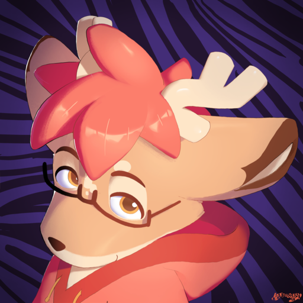
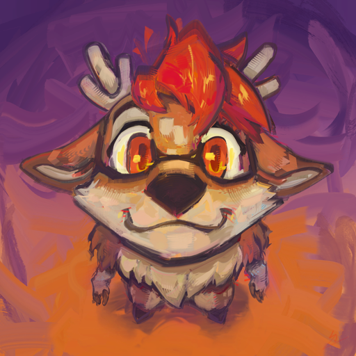
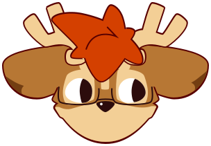
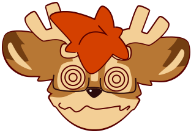
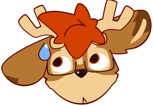
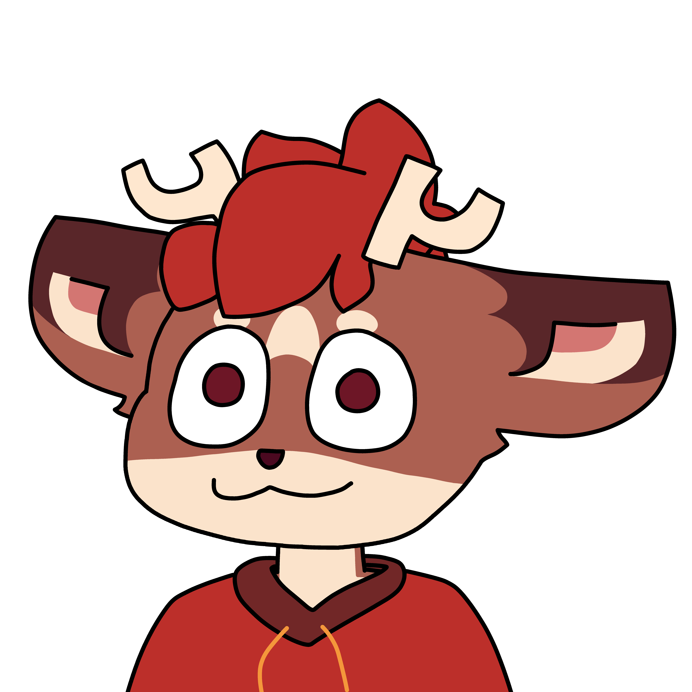
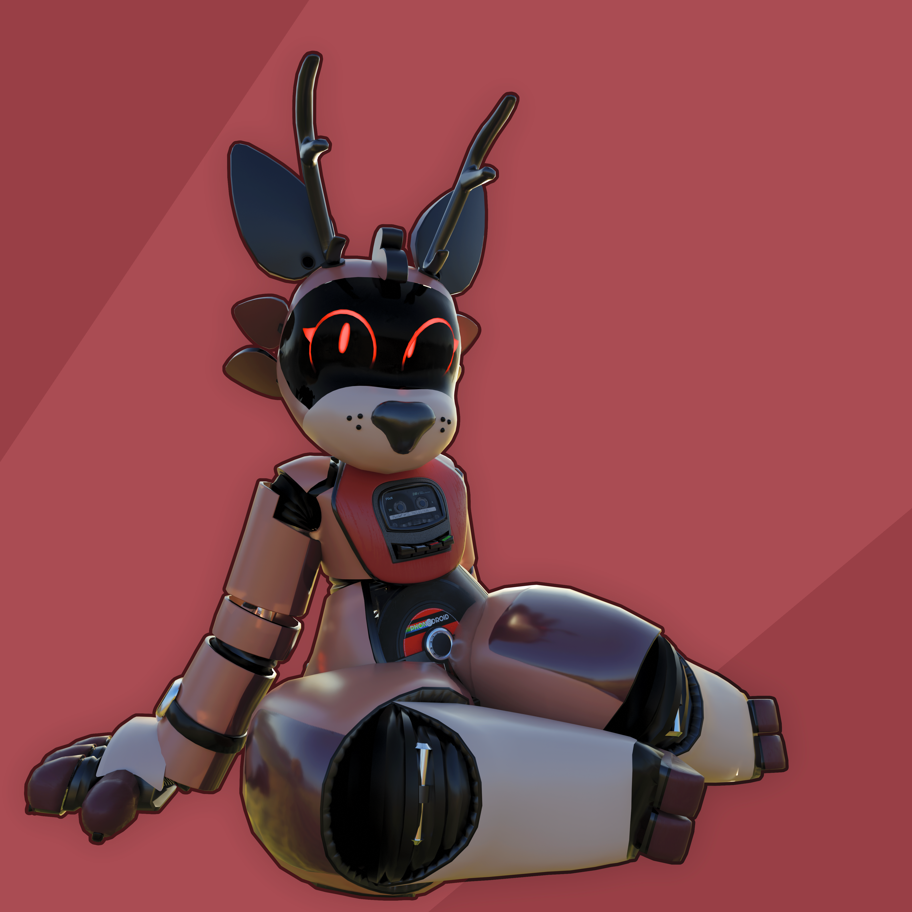
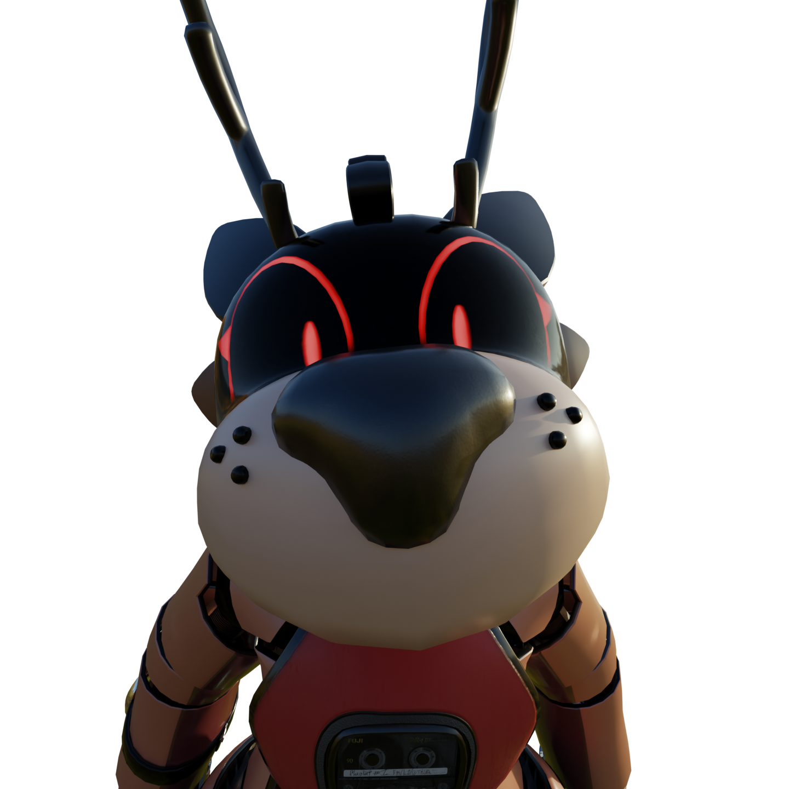
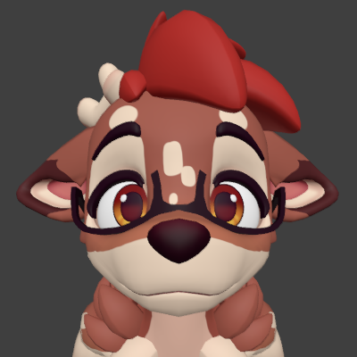
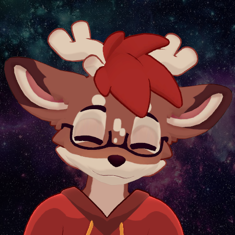
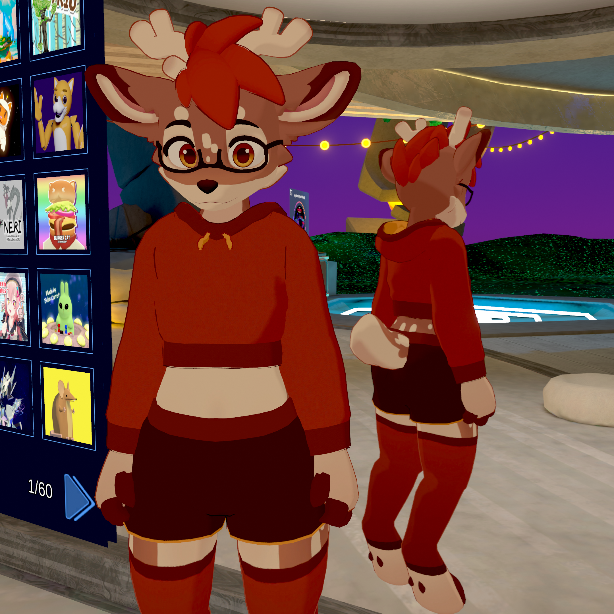
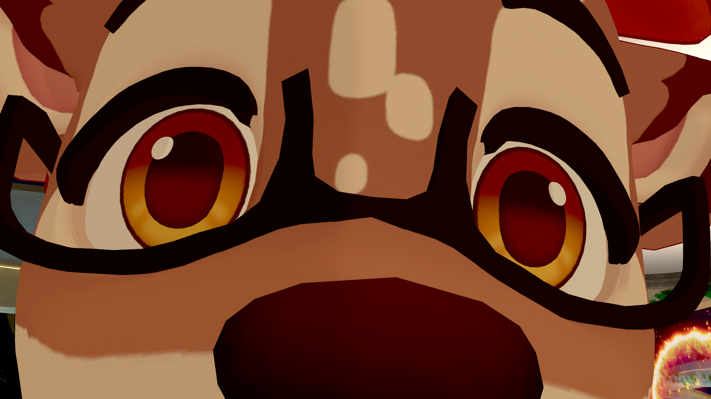
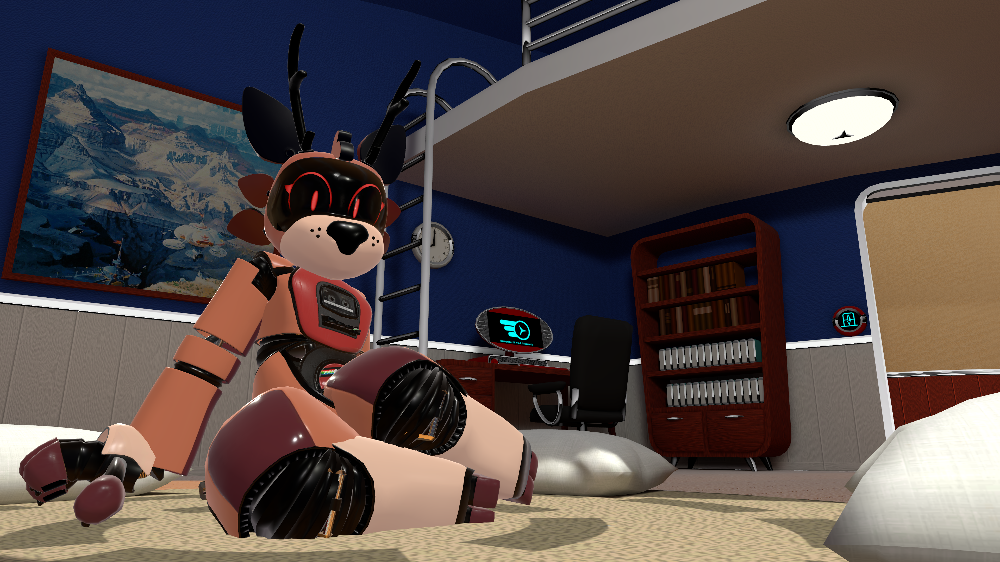
Minecraft Server
Come play!
You can join mc.koye64.com right now for a Premium Anarchy Experience™. The server may or may not run out of its puny 4 gigabytes of ram. Someday, there may even be rules :3
This website is made with JetBrains Mono.
Copyright © 2026 Koye/Koye64. All rights reserved.